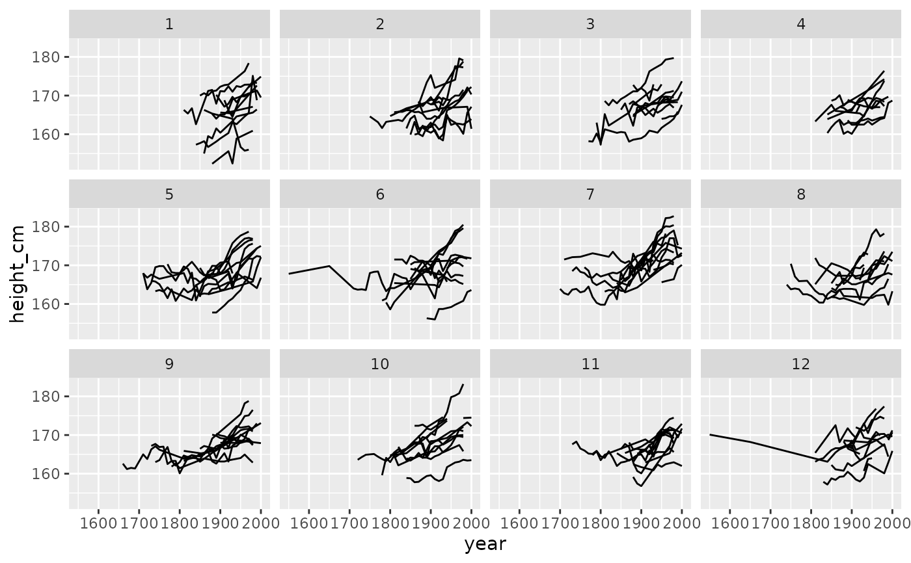

Average male heights in 144 countries from 1810-1989, with a smaller number of countries from 1500-1800. Data has been filtered to only include countries with more than one observation.
Format
An object of class tbl_ts (inherits from tbl_df, tbl, data.frame) with 1490 rows and 4 columns.
Details
heights is stored as a time series tsibble object. It contains
the variables:
country: The Country. This forms the identifying
key.year: Year. This forms the time
index.height_cm: Average male height in centimeters.
continent: continent extracted from country name using
countrycodepackage (https://joss.theoj.org/papers/10.21105/joss.00848).
For more information, see the article: "Why are you tall while others are short? Agricultural production and other proximate determinants of global heights", Joerg Baten and Matthias Blum, European Review of Economic History 18 (2014), 144–165. Data available from https://datasets.iisg.amsterdam/dataset.xhtml?persistentId=hdl:10622/IAEKLA, accessed via the Clio Infra website.
Examples
# show the data
heights
#> # A tsibble: 1,490 x 4 [!]
#> # Key: country [144]
#> country continent year height_cm
#> <chr> <chr> <dbl> <dbl>
#> 1 Afghanistan Asia 1870 168.
#> 2 Afghanistan Asia 1880 166.
#> 3 Afghanistan Asia 1930 167.
#> 4 Afghanistan Asia 1990 167.
#> 5 Afghanistan Asia 2000 161.
#> 6 Albania Europe 1880 170.
#> 7 Albania Europe 1890 170.
#> 8 Albania Europe 1900 169.
#> 9 Albania Europe 2000 168.
#> 10 Algeria Africa 1910 169.
#> # ℹ 1,480 more rows
# show the spaghetti plot (ugh!)
library(ggplot2)
ggplot(heights,
aes(x = year,
y = height_cm,
group = country)) +
geom_line()
# Explore all samples with `facet_strata()`
ggplot(heights,
aes(x = year,
y = height_cm,
group = country)) +
geom_line() +
facet_strata()

# Explore the heights over each continent
ggplot(heights,
aes(x = year,
y = height_cm,
group = country)) +
geom_line() +
facet_wrap(~continent)
 # explore the five number summary of height_cm with `features`
heights %>%
features(height_cm, feat_five_num)
#> # A tibble: 144 × 6
#> country min q25 med q75 max
#> <chr> <dbl> <dbl> <dbl> <dbl> <dbl>
#> 1 Afghanistan 161. 164. 167. 168. 168.
#> 2 Albania 168. 168. 170. 170. 170.
#> 3 Algeria 166. 168. 169 170. 171.
#> 4 Angola 159. 160. 167. 168. 169.
#> 5 Argentina 167. 168. 168. 170. 174.
#> 6 Armenia 164. 166. 169. 172. 172.
#> 7 Australia 170 171. 172. 173. 178.
#> 8 Austria 162. 164. 167. 169. 179.
#> 9 Azerbaijan 170. 171. 172. 172. 172.
#> 10 Bahrain 161. 161. 164. 164. 164
#> # ℹ 134 more rows
# explore the five number summary of height_cm with `features`
heights %>%
features(height_cm, feat_five_num)
#> # A tibble: 144 × 6
#> country min q25 med q75 max
#> <chr> <dbl> <dbl> <dbl> <dbl> <dbl>
#> 1 Afghanistan 161. 164. 167. 168. 168.
#> 2 Albania 168. 168. 170. 170. 170.
#> 3 Algeria 166. 168. 169 170. 171.
#> 4 Angola 159. 160. 167. 168. 169.
#> 5 Argentina 167. 168. 168. 170. 174.
#> 6 Armenia 164. 166. 169. 172. 172.
#> 7 Australia 170 171. 172. 173. 178.
#> 8 Austria 162. 164. 167. 169. 179.
#> 9 Azerbaijan 170. 171. 172. 172. 172.
#> 10 Bahrain 161. 161. 164. 164. 164
#> # ℹ 134 more rows